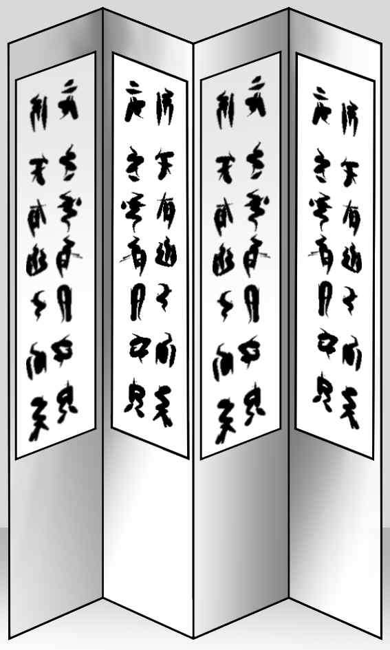
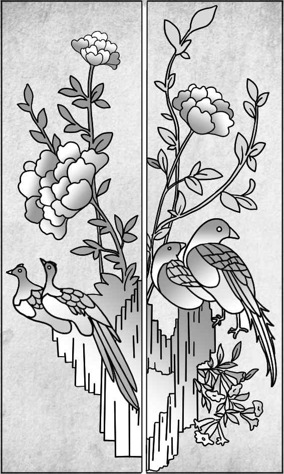
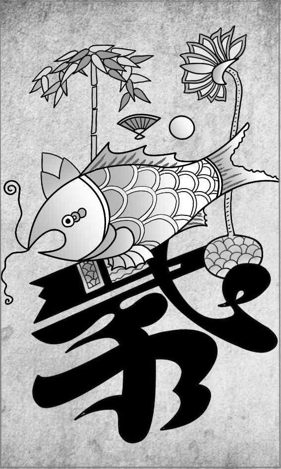

안녕하세요? 여러분, 병풍이 무엇인지 알고 계신가요? (청중의 반응을 살피며) 네, 고개를 끄덕이는 분들이 많으시네요. 최근 한 휴대폰 제조사에서 여러 번 접을 수 있는 병풍의 특징을 적용한 '병풍폰'을 개발한다는 기사를 보았습니다. 저는 이 기사를 보고 호기심이 생겨 전통 공예품 중 병풍에 대해 조사하여 발표하게 되었습니다.
'병풍'은 바람을 막는다는 의미를 지니는데, 바람을 막는 기능 외에 무엇을 가리는 용도로도 사용되는 소품입니다. (㉠자료를 제시하며) 병풍은 이렇게 펼치고 접을 수 있는 구조적 특징이 있어 공간을 효율적으로 사용할 수 있도록 하는 장점이 있습니다. 병풍을 펼쳐 공간을 분리하거나, 접어서 공간을 확장하여 사용할 수 있기 때문입니다. 이러한 구조적 특징으로 인해 야외나 다른 공간으로 병풍을 옮겨 사용하기 편리하고, 접었을 때 보관하기에도 용이합니다.
병풍은 공간을 꾸미는 상황에 맞는 분위기를 조성하는 장식적 특징도 있습니다. 이러한 특징은 병풍에 그림을 넣는 데서 두드러지게 나타나는데, 병풍에는 상징적인 의미를 지닌 그림들을 사용하는 경우가 많습니다. 장수를 기원할 때는 십장생을, 선비의 지조를 강조하고자 할 때는 사군자를 그린 그림을 사용하기도 하였습니다. (㉡자료를 제시하며) 지금 보시는 이 병풍에는 꽃과 새가 그려져 있는데, 결혼식 때 신랑 신부의 행복과 부귀영화를 기원하는 상징적 의미를 담은 것입니다. 꽃과 새를 화려하게 그려 넣어 장식함으로써 결혼식의 경사스러운 분위기를 조성하는 데 사용합니다.
(㉢자료를 제시하며) 여러분, 이 병풍에는 어떤 특징이 있을까요? (청중의 대답을 듣고) 네, 맞습니다. 이 병풍은 글자와 그림이 어우러져 있는 '문자도 병풍'입니다. 문자도 병풍은 유교의 주요 덕목을 나타내는 글자를 그린 병풍입니다. 보시는 것처럼 '효'라는 한자와 다양한 소재들이 어우러져 있는데요, 각 소재들은 효자와 관련된 이야기에 등장하는 것들입니다. 이 중에서 가장 크게 보이는 잉어를 예로 들자면, 추운 겨울에 물고기를 드시고 싶어 하는 부모님을 위해 얼음을 깨고 물고기를 잡은 효자의 설화와 관련이 있습니다. 이러한 문자도 병풍은 집안을 장식하고 유교적 덕목을 되새기기 위한 용도로 사용되었습니다.
병풍은 우리 선조들의 생활 속에서 꾸준하게 사랑받아 온, 실용성과 예술성을 겸비한 생활용품입니다. 앞으로 여러분께서도 어디선가 병풍을 접했을 때 관심 있게 살펴봐 주시기 바랍니다. 그리고 발표 내용을 떠올리면서 병풍에 담긴 의미를 생각해 보고, 그 아름다움도 느껴 보시면 좋을 것 같습니다. 이상으로 발표를 마치겠습니다.

[자료 1]

[자료 2]

[자료 3]
얼마 전 카페에서 전체를 접고 펼 수 있는 구조로 된 창문을 보았어. 날씨가 나쁠 때는 펼쳐서 외부와 차단하고, 날씨가 좋을 때는 접어서 공간을 확장하여 사용하고 있었어. 발표 내용을 듣고 그 창문이 공간을 분리하고 확장하는 병풍의 구조적 특징과 유사하다고 생각하게 되었어. 박물관에서나 볼 수 있는 옛날 물건이라고만 생각했던 병풍이 가지는 현대적 가치를 생각해 보는 기회가 되었어.